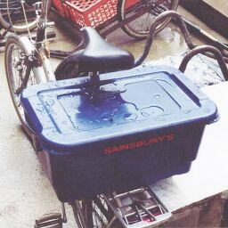
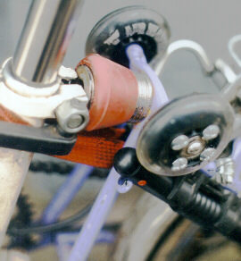
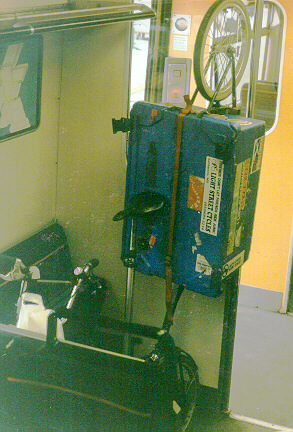
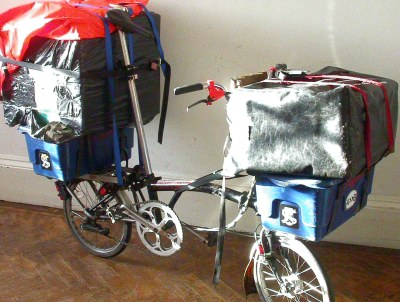

| Page last changed November 20, 2007 |
Along with this firms's newly developed panniers for recumbents comes this bag,designed specifically for use with the award winning Brompton folding bike. The bag is made from tough Cordura proofed material and most of it is padded to add structural stiffness. The bag is secured to the rack by sliding the seatpost through the nylon hoop at the front. A snap closure ensures the rear part of the bag stays put.
It was good to see a large, easy to use zip here, and there is a mesh upper portion for placing wet outer garments in. Natty finishing details include a hoop for attaching a rear Knightlite and hooks to accommodate a shoulder strap. (Paul Vincent)
Cycling Plus verdict 4/5
A big help in boosting the carrying-capacity of your Brompton
Contact: Comfort Cycles tel 0870 787 8736
 |  |
 Having mulled over the options I decided to have a bash at diy. I used
one of my favourites, half inch angle aluminium (light, easy to work),
joints drilled/bolted/Araldited. Painted with black enamel - should have
used Hammerite.
Having mulled over the options I decided to have a bash at diy. I used
one of my favourites, half inch angle aluminium (light, easy to work),
joints drilled/bolted/Araldited. Painted with black enamel - should have
used Hammerite.
| tapes tapes | | | | V V | _____________________ | | || || | | | || || | | | || || | | | | | | | | |_____||_______||_____| | | ^ ^ | | | | tapes tapesCost: £15 or so.
{Malcolm Lyon}
Yes, I also use the Camper model it is big and will last for lifetime .. but
you will realise that whilst the fabric is water and bullet proof the design
does not exclude water from the flap edges. It is important to put clothes
in a plastic bag and use the saddle bag as a sort of compression bag!
Readers around the world may be interested to know that these Carradice bags
are used widely by members of the British Cyclists Touring Club and more or
less 'de rigueur' for well dressed CTC bike!
The leather straps a bit tedious to unbuckle. And there has been a chap
selling a very nice quickly detachable saddle fitting - I don't recall his
name [...]. The fitting is well made in
anodised aluminium and would not restrict the folding of a Brompton. He
also makes an uplift version for conventional bikes where the saddle is
close to the rear mudguard.
I can identify the source for these if requested.
I have said they are very easy for practical person to make and require only
a short length of ally strip a piece of dowel rod and an old QR hub skewer.
Difficult to describe in words but I am happy to send a sketch by fax to
anyone interested in making one. Or I could perhaps scan a tif file to
attach to an email .. but I have not tried this on my computer.
This months [april 97] issue of the CTC magazine features on page 41 the Kwiklift attachment for the Carradice bags. This is ideal for folders as it enables the bag to be rapidly removed when the bike is folded. It comes in two versions. 17 pounds for the basic bracket plus another 10 pounds for the additional bag support which may add some stability to the bag but is really designed to eliminate pressure on the mudguard of a big wheel bike. Available from
| W.G. Lord
4 Kenilworth Gardens Newton le Willows, WA12 8ES Phone 01925 224125 in evenings |
{Malcolm J New} I have recently completed a short tour of the Isle of Wight on my T5 model traveling a total of 60 reasonably comfortable miles. I used a Carradice "Super C" front box (with Klick fix fittings) and a very large Saddle Bag in the same range. The "Super C" saddle bag is similar in size and shape to the Carradice Camper Long flap but with more modern quick release buckles and quick release straps for removal prior to folding.
_____________ ! ! ! ___ ! ! O ! ! O ! !___! !___!And yes, it draws even more attention.

|
It is a standard Dutch bicycle child's seat, takes children up to 15kg.
The seat clips in to a holder, so you can still fold the bike by quickly sliding the seat out of the holder.
(larger & other images) |
| Dave Holladay (<<CUSTOM=FOLDER>>)
PO Box 15174 Glasgow G4 9LW 0141 332 4733 Phone/Fax |
I ride 100" fixed wheel on 27", and used to ride up to 128" including up moderate hills with a geared machine - I have sheared 4 TA cranks off at the axle socket in 15 years, and frequently fractured chainstays, seatstays - the only crank axle housing which has survived without 'belling out is the Nervex on the Scot, all others have to use cartridge bearings. [...] I broke an AW axle aged 14, and continue to bend all but the best quality solid rear axles, and break SA hollow, slotted ones. [...] My weight 95Kg - say 210lb, plus occasional 60lb pack, and up to 250lb on the trailer, and the front pannier......
My original 1989 front forks (about the only original bit on the bike) appear to have given up the ghost - I'm wary about riding it with the trailer (although the last trip -walked home with 70 sheets of hardboard (at least 150Kg)), once I get both brakes up to scratch. The problem is that the forks 'knock' from side to side, suggesting that the steerer has fractured and the steerer bolt & wedge are the only things holding the whole lot together. Not bad considering that I've seen out at least 3 sets of frame units (front/rear) and 4 or 5 rear triangles - interesting that the current rear triangles seem to be lasting with no problem, now the pivot spindle must be wearing more (going by the wear on previous exchanges).
I used to build 36 spoke 27" wheels in the 50 minute train trip between Edinburgh & Glasgow, and usually reckoned to fix a puncture in the 8 minutes between Paisley and Glasgow.
|  | The main tube meets the rear wheel assembly (triangle), adorned with Dave's replacement suspension unit, retaining strap, and half of the skatewheel conversion kit. Also a Blackburn MP-4 pump fitted through Dave's adapter instead of the standard mini pump. |

| Hinge connecting the front wheel assembly (left) with the main tube (right) including Dave's clamp plate retaining kit to secure the plate and bolt (far right). |

| Nordlicht dynamo fitted on front fork, B&M Lumotec Plus front light, and V-brakes! |

| T-model rear rack with a B&M Toplight and a 4D-Lite Plus on the mudguard, and the other half of the skatewheel conversion kit (notice the alu extensions). |

| With Dave's custom carrier fitting to the standard Brompton luggage block, you can move a lot at once... |
|  | And since that's not enough, Dave is developing a trailer built around a waterproof box... |

| ... or around a bike carrier. Notice the chopper handlebars on the black Brompton and a smaller custom version on the white Brompton. The black Brompton has two chainrings and a simple freewheel. The white one features an early version of the castor kit. |

|
Shopkeeper to Dave's business partner:
"Your husband will call in?" "Yes he's coming through on bus" "Oh but it's heavy, he'll need a car" "He'll decide when he arrives" At the shop: "Oh your wife said you'd be bringing a car" "I don't have a car and I don't have a wife." "How can you take the package?" "Just put it on the carrier" and leaves the bemused shopkeeper. |

| One PC & 17" monitor.
Note that the bike is now fully HS 33 hydraulic braked - nice daglo casting finishes.
The led lumotec conversion is fitted in its wooden plate,
as is a freecoaster hub (1-speed) and a SON 80 dynamo.
First of 2 Secutec B&M experimentally mounted on rear rack stay.
Note how using the Smartbox on rear kept heel clearance for my size 11's.
Sorry about the pedals - need to get new set...
Estimated GVW based on riding over weighbridge (digital 0kg-50,000kg) at Dover Eastern Docks with a similar load is c. 200kg including 100kg of me. Very smooth ride, no major problems apart from limited handlebar swing. | 
|
|  |

| A Cresswell Micro equipped with, among other stuff, a Brompton luggage block. |
| The Brompton Folding Bicycle FAQ |